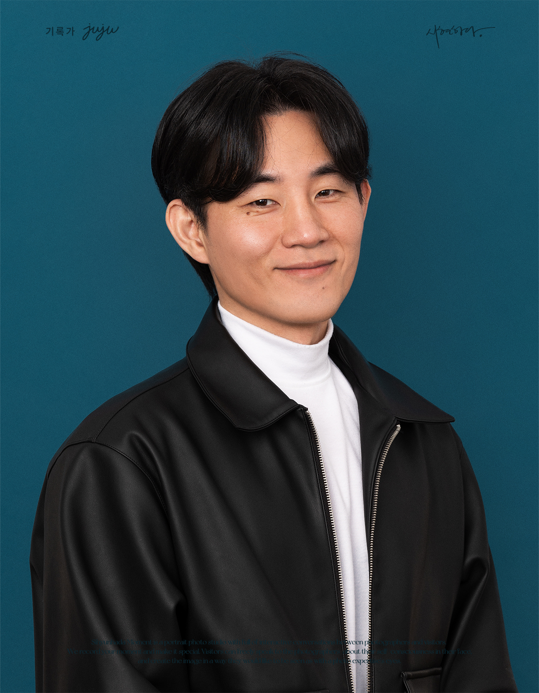

김기윤
서울특별시 강남구 봉은사로 213, 센트럴 타워 지하 1층
전문적인 영상 제작과 중계송출 분야에서 8년 이상의 경험을 바탕으로, 최고급 장비와 노하우를 활용하여 고품질의 영상 콘텐츠를 제작합니다.
유튜브 라이브, 틱톡 라이브, ZOOM 웨비나, 실시간 스트리밍 등 다양한 형태의 영상 송출 작업을 전문적으로 수행하며, 각종 행사와 컨퍼런스의 성공적인 영상 제작을 보장합니다.
표준화되지 않은 라이브 스트리밍 장비와 프로그램들을 다양한 경험과 실험으로 지속적인 연구개발을 하고 있으며, 최신 기술 트렌드에 맞춰 혁신적인 솔루션을 제공합니다.

책과 강연 출판사의 촬영 환경 컨설팅 작업
출판사 촬영 환경 분석 및 컨설팅
컨설팅포베스트엔터테인먼트 아이돌 CrazAngel 뮤직비디오 제작
아이돌 그룹 뮤직비디오 전문 제작
영상제작성균관대학교 산학협력단 글로벌 화상회의 중계송출 작업
글로벌 화상회의 시스템 운영 및 중계송출
중계송출하이퍼네트웍스x제이블 하계 워크샵 홍보영상 촬영 및 제작
워크샵 홍보영상 촬영 및 편집
영상제작국민은행 화상회의 송출 작업
화상회의 시스템 송출 및 운영
송출범부처 방역연계 감염병연구개발재단 역량강화사업 비대면 사업설명회 송출
정부기관 비대면 사업설명회 송출
송출성균관대학교 산학협력단 글로벌 화상회의 송출
글로벌 화상회의 송출 시스템 운영
송출래빗팩토리 teach me idol - 케플러 편 중계송출
아이돌 프로그램 중계송출
중계송출공존마케팅 방송환경 컨설팅
방송환경 분석 및 컨설팅
컨설팅한국과학기술기획평가원 화상회의 송출
정부기관 화상회의 송출
송출하이비코리아 라이브커머스 정기 중계송출 (2025년 1월~6월)
정기적인 라이브커머스 중계송출
중계송출사내조회 실시간 송출 작업
전문적인 방송 송출 시스템 구축 및 운영
중계송출유튜브 더블비 실시간방송 환경 컨설팅
방송 환경 분석 및 최적화 컨설팅
컨설팅허영생 일본콘서트 안내영상 제작
전문적인 콘서트 안내영상 제작
영상제작국가기술표준원 글로벌 컨퍼런스 중계송출
글로벌 컨퍼런스 전문 중계송출 시스템 운영
중계송출팟캐스트 촬영환경 컨설팅
팟캐스트 환경 최적화 컨설팅
컨설팅영상제작 강의 출강 (상반기 하반기)
전문적인 영상제작 교육 및 강의
출강화상회의 송출지원
전문적인 화상회의 송출 시스템 지원
송출지원글로벌 화상회의 송출지원
글로벌 화상회의 전문 송출 시스템 지원
송출지원직무별관리자 양성교육 방송환경 컨설팅
방송환경 최적화 및 교육 시스템 컨설팅
컨설팅실시간방송 환경 컨설팅
게임 방송 환경 최적화 컨설팅
컨설팅실시간방송 환경 컨설팅
법률 관련 방송 환경 최적화 컨설팅
컨설팅스타트업 오픈스테이지 화상회의 송출
스타트업 생태계 지원 화상회의 송출
송출밴드카이로스 공연 촬영
전문적인 공연 촬영 및 영상 제작
영상제작성동미래직업체험축제 중계송출
미래직업 체험 축제 전문 중계송출
중계송출글로벌 세미나 중계송출
습지학 관련 글로벌 세미나 전문 중계송출
중계송출과학 컨퍼런스 화상회의 송출지원
과학 관련 전문 컨퍼런스 송출지원
송출지원ESG 규재대응을 위한 종합과정 중계송출
ESG 관련 전문 교육과정 중계송출
중계송출2024 학교체육진흥포럼 중계송출
학교체육 관련 전문 포럼 중계송출
중계송출밴드 카이로스 공연 촬영
전문적인 공연 촬영 및 영상 제작
촬영2024 학교체육진흥포럼 중계송출 작업
학교체육 관련 전문 포럼 중계송출
중계송출한국환경산업기술원 ESG 규재대응을 위한 종합과정 중계송출 작업
ESG 규재대응 관련 전문 과정 중계송출
중계송출한국조직은행 과학 컨퍼런스 화상회의 송출지원
과학 컨퍼런스 화상회의 송출지원
송출지원한국습지학회 글로벌 세미나 송출 작업
습지학 관련 글로벌 세미나 송출
송출성동2차산업혁명체험센터 성동미래직업체험축제 중계송출 작업
산업혁명 체험축제 중계송출
중계송출밴드카이로스 공연 촬영
전문적인 공연 촬영 및 영상 제작
촬영서울창조경제혁신센터 x 르노코리아 스타트업 오픈스테이지 화상회의 송출
스타트업 오픈스테이지 화상회의 송출
송출법률사무소 한해 실시간방송 환경 컨설팅
실시간방송 환경 컨설팅
컨설팅워게이밍넷 실시간방송 환경 컨설팅
실시간방송 환경 컨설팅
컨설팅세보엠이씨 직무별관리자 양성교육 방송환경 컨설팅
직무별관리자 양성교육 방송환경 컨설팅
컨설팅카카오뱅크 글로벌 화상회의 송출지원
글로벌 화상회의 송출지원
송출지원B노선주식회사 화상회의 송출지원
화상회의 송출지원
송출지원의왕인생대학 영상제작 강의 출강
영상제작 강의 출강
강의선엔지니어링 팟캐스트 촬영환경 컨설팅
팟캐스트 촬영환경 컨설팅
컨설팅국가기술표준원 글로벌 컨퍼런스 중계송출 작업
글로벌 컨퍼런스 중계송출
중계송출AZ엔터테인먼트 허영생 일본콘서트 안내영상 제작
허영생 일본콘서트 안내영상 제작
영상제작유튜브 더블비 실시간방송 환경 컨설팅
실시간방송 환경 컨설팅
컨설팅한국표준협회 사내 세미나 중계송출 작업
사내 세미나 중계송출
중계송출그로비교육 화상회의 송출지원
화상회의 송출지원
송출지원크크삭스 라이브커머스 촬영 환경 컨설팅
라이브커머스 촬영 환경 컨설팅
컨설팅대만 TSE 한국 부스 원정 촬영
한국 부스 원정 촬영
촬영시민사회포럼 중계송출 작업
시민사회 관련 포럼 실시간 방송
중계송출기술감독 및 중계송출 작업
전문적인 기술감독 시스템 운영
중계송출학교체육진흥포럼 중계송출 작업
학교체육 관련 전문 포럼 중계송출
중계송출한국표준협회 실시간대기화면 중계송출 작업
실시간대기화면 시스템 운영
중계송출무통장 송금 어플리케이션 SEND 홍보영상, 무빙툰 제작 및 프로모션 콘텐츠 제작
플레이통코오로이 킨텍스 박람회 라이브 중계송출 작업
박람회 현장 라이브 스트리밍 중계송출
중계송출지역지식재산센터 총괄워크숍 중계송출 작업
지식재산 관련 전문 워크숍 중계송출
중계송출인큐텍 디지털자산 투자포럼 중계송출 작업
디지털자산 투자 관련 전문 포럼 중계송출
중계송출한국전자파학회 동계종합학술대회 중계송출 작업
전자파 관련 전문 학술대회 중계송출
중계송출NFT META 2022 중계송출 작업
NFT 관련 전문 이벤트 중계송출
중계송출모아소프트 세미나 중계송출 작업
소프트웨어 관련 전문 세미나 중계송출
중계송출모아소프트 UAM 전략세미나 중계송출 작업
UAM 관련 전문 전략세미나 중계송출
중계송출남양넥스모 타운홀미팅 중계송출 작업
기업 관련 전문 타운홀미팅 중계송출
중계송출부천국제판타스틱영화제 개막식 라이브 중계송출 작업
영화제 개막식 현장 라이브 스트리밍 중계송출
중계송출동해시 환경영향평가공청회 라이브 중계송출 작업
환경영향평가 공청회 현장 라이브 중계송출
중계송출바른소리청년국회 이낙연국회의원 토크콘서트 중계송출 작업
국회 현장 토크콘서트 중계송출
중계송출국회 블록체인기업진흥협회 창립 3주년 기념식 중계송출 작업
블록체인 관련 기념식 국회 현장 중계송출
중계송출한국생산기술연구원 화상회의 중계송출 작업
생산기술 관련 전문 화상회의 중계송출
중계송출국회심포지엄 중계송출 작업
국회 현장 심포지엄 중계송출
중계송출디지털자산포럼 중계송출 작업
디지털자산 관련 전문 포럼 중계송출
중계송출메디트 본사 유튜브 라이브 글로벌 웨비나 촬영 및 송출
중계송출유튜브 라이브 실시간방송 환경 세팅
중계송출ZOOM 글로벌 웨비나 촬영 및 송출
중계송출독립유공자 후손 장학증서 수여식 촬영 및 송출
중계송출ZOOM 글로벌 웨비나 송출
중계송출트위치 2채널 3일 연속 스트리밍 동시송출 세팅 및 감독
중계송출UN 토크콘서트 실시간방송 세팅
중계송출유튜브 라이브 실시간 스트리밍 감독
중계송출졸업 패션쇼 유튜브 실시간방송 송출 감독
중계송출앳지랭크를 통한 다양한 외주 프로젝트 및 컨텐츠 제작
컨텐츠제작창립2주년기념 세미나 및 블록체인대상 시상식 유튜브 라이브 촬영 및 송출
중계송출한국제품안전관리원 중계송출 작업
제품안전 관련 전문 중계송출
중계송출승일미디어를 통한 다양한 외주 프로젝트 및 컨텐츠 제작
외주 프로젝트를 통한 컨텐츠 제작 수행
컨텐츠제작플레이통 어플리케이션 사용가이드 홍보영상 제작
플레이통 초기 홍보영상 제작
플레이통LED월: 전체 벽면 LED월 (고화소 220인치급)
바닥 LED: 2m x 2m 인터랙티브 바닥 영상
• 4K 고해상도 지원
• 실시간 영상 처리
• 인터랙티브 기능
메인카메라: Sony α7 IV (4K 풀프레임 미러리스) 2대
캠코더: Sony FDR-Z90 (4K 핸디캠) 2대
서브카메라: Canon (4K 풀프레임 미러리스) 1대
• 4K/60fps 촬영
• 전문 렌즈 세트
• 전동 슬라이더 지원
전면 조명: 800W (200W 4대구성)
무빙라이트: 다수
컬러 지속광: Nanlite 300W급 2대, 500W급 1대
• RGB 컬러 조명
• DMX 제어 시스템
• 전문 조명 콘솔
스피커: Behringer 1000W급 액티브 스피커 2대
믹서: Behringer 콘솔 1대
마이크: 무선 핸드마이크 8대, 핀마이크 4대
• 프로덕션 인터컴
• 다채널 믹싱
• 무선 시스템
송출 데스크탑: Intel i9 + RTX 4060
영상 스위처: Blackmagic Design 8채널 HDMI
캡쳐 장비: 4채널 HDMI 개별
• 라이브 스트리밍 최적화
• 실시간 영상 전환
• 다채널 송출
렌즈: 화각별 렌즈 세트 (광각/표준/망원/단렌즈)
전동 슬라이드: Zhiyun Axis 120 (120cm)
삼각대: Miliboo 영상용 삼각대 다수
• Sony E마운트 & Canon RF마운트
• 부드러운 카메라 움직임
• 안정적인 촬영
주요 프로젝트
연간 경력
중계송출 전문
고화질 지원
전문적인 영상 제작과 중계송출이 필요하시다면 언제든 연락주세요.
이메일: coj@cojay.co.kr
전화: 010-2673-6044
위치: 서울특별시 강남구 봉은사로 213, 센트럴 타워 지하 1층
업무시간: 평일 09:00 - 18:00